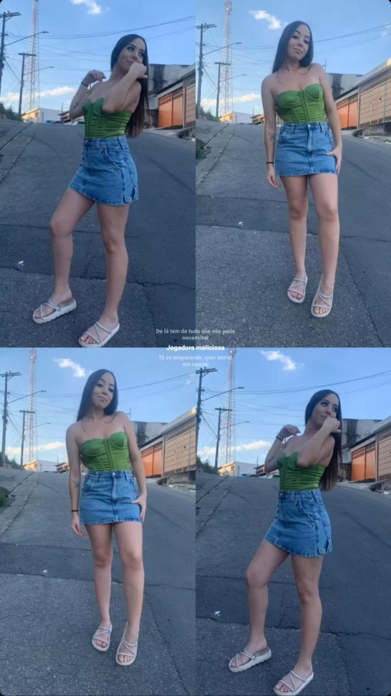
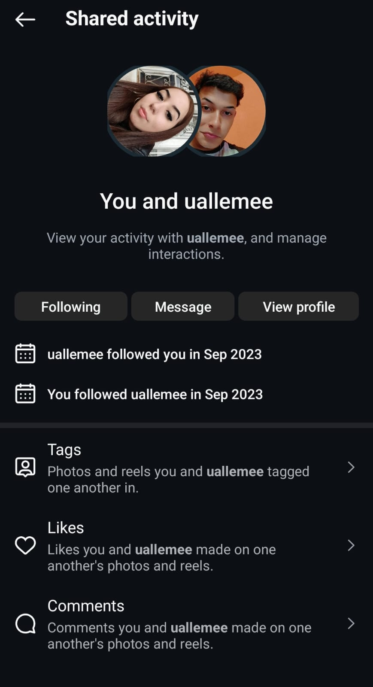
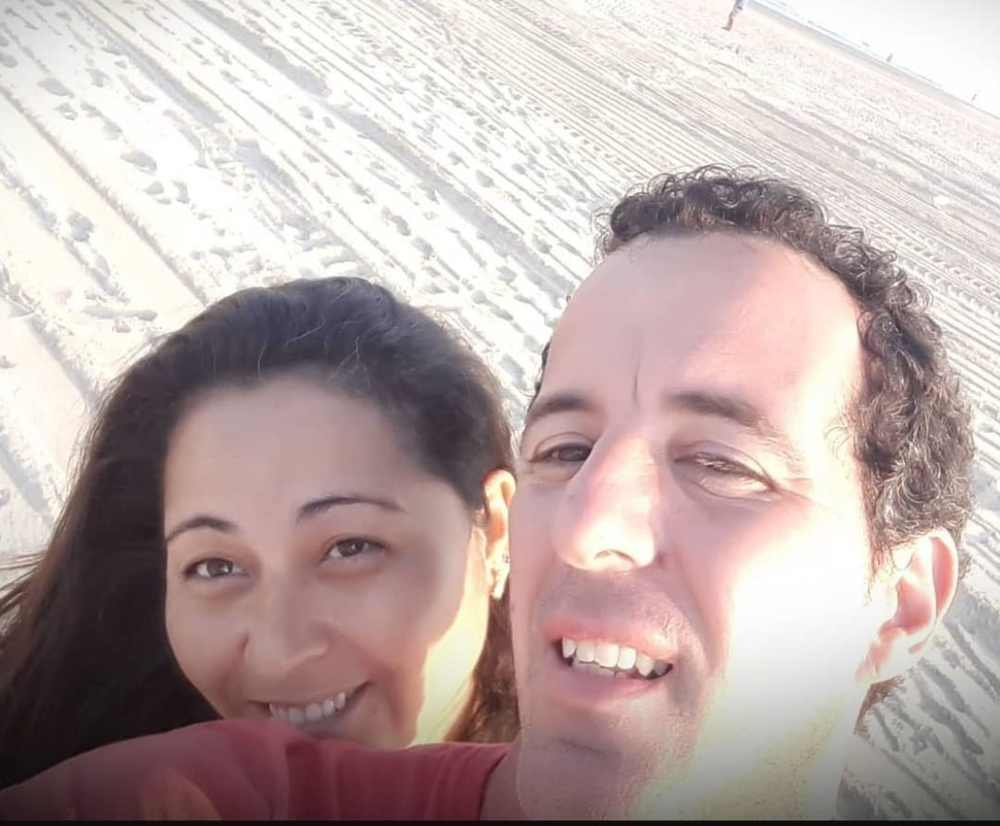
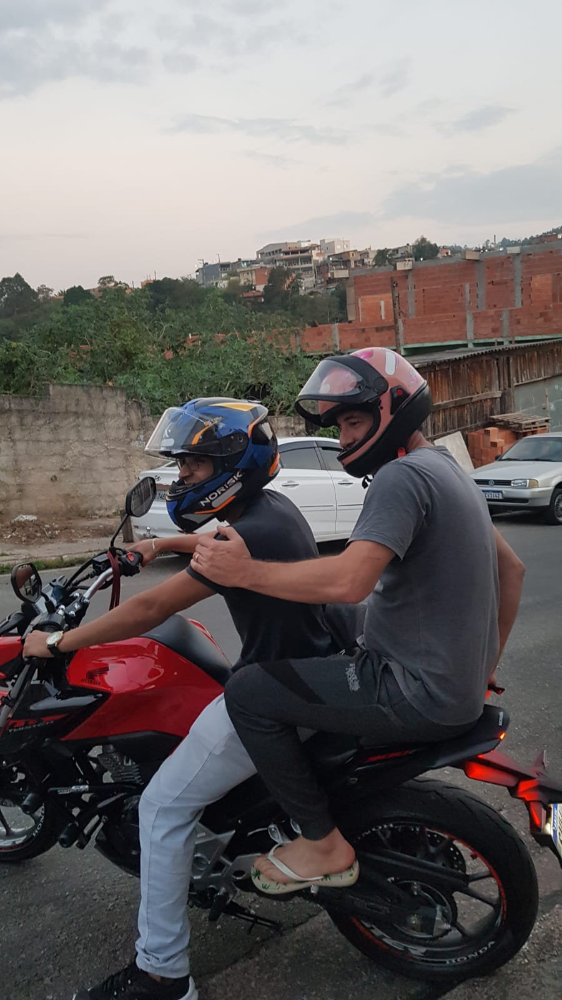
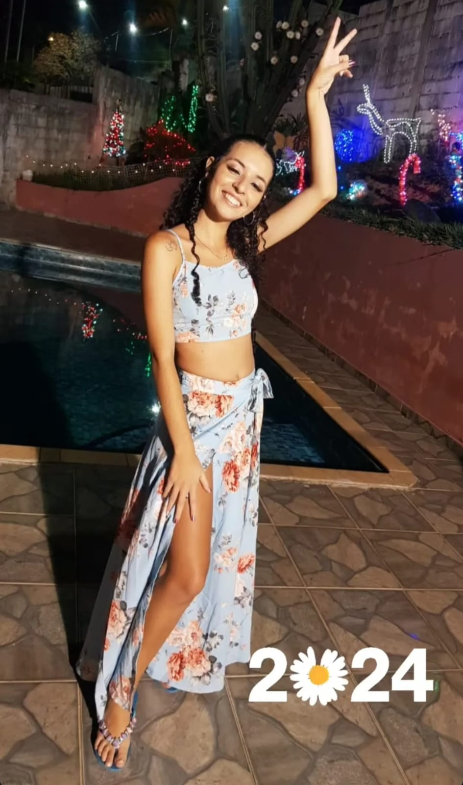
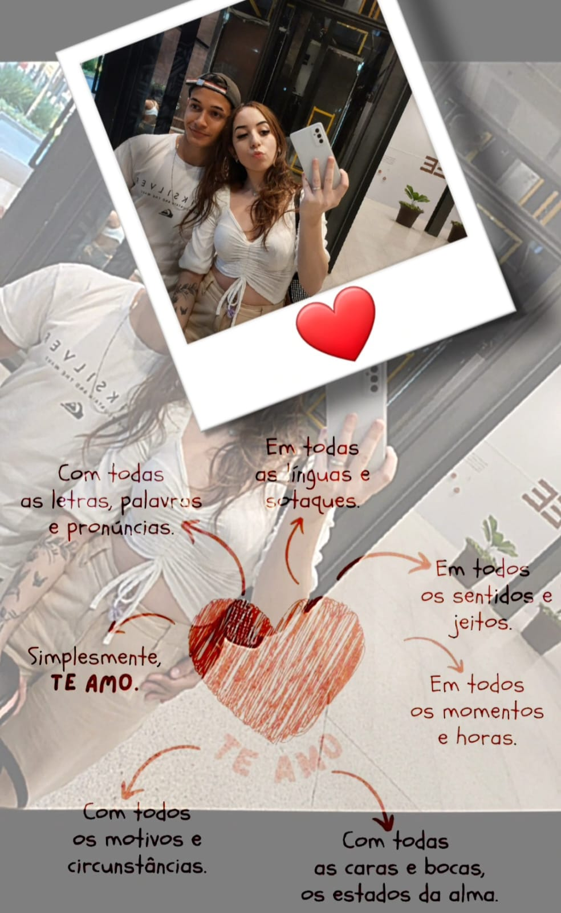

Legenda da Foto 1
Primeiro, quero apresentar essa garota aqui. Isso, essa mesmo que está aparecendo na tela, ela é minha namorada.
Esse pitelzinho de meio metro irradiando beleza se chama Julia, é uma garota muito linda e divertida. E mesmo apesar de não parecer, é um toquinho de gente kkk.
Este foi o dia em que eu a vi no parque, extremamente gata e maravilhosa. Lá estava eu jogando um fut de quebrada quando de repente avisto essa moça assistindo ao jogo. Eu tentei me controlar, mas o quanto essa mulher chamou a minha atenção, não está escrito. Tive dificuldade até mesmo para criar isso daqui sem parar por meia hora para admirar as fotos dela.
Detalhe que não havia dito: Já seguia ela nas redes sociais desde setembro de 2023😮💨, fãnzasso, curtia tudo e ela nunca deu um sinal de vida para mim kkkkk
Mas me diz aí, como não se apaixonar?...
Enfim, eu não resisti e sedei aos olhares dessa garota... depois de muito tempo, MUITO TEMPO MESMO, em outro momento ela retornou ao parque, e lá estava eu em uma friaca infeliz jogando futebol.
Nesse dia ela estava sem óculos, então era minha oportunidade de tirar proveito da miopia dela para enxergar algo atraente em mim kkkkkkkkk
A partir desse dia começamos a conversar e nos conhecer, uma semana depois já estávamos juntos saindo por aí hahahahahah ainda bem que ela é emocionada igual a mim e não tem medo de demonstrar amor.
Essa é minha sogra, uma pessoa amorosa e muito simpática, adoro passar o tempo conversando com ela, dou boas risadas. Tenho que agradecer muito a ela por ter gerado a Julia, que hoje é o amorzinho da minha vida.
Esse é meu sogro, o cara que eu temia e pensava que seria impossível convencer que a filha dele um dia seria minha mulher kkkkkkk.
E aqui está ele dando um cheiro no meu cangote kkkkkk um cara muito gente boa e muito resenha.
Essa é a minha cunhada, gosto de me juntar a ela para tirar onda da cara da Julia hahaha, isso quando tenho a oportunidade, pois normalmente são todos eles que se juntam para tirar onda de mim🤣🤣🤣🤣
Em resumo, essa é minha segunda família, lugar onde passo por momentos e conversas muito boas, simplesmente adoro estar com todos eles e principalmente, com a branquinha de meio metro chamada Julia.
Que venham muito mais pela frenteee.
Te amo meu amor, eu te amo demais ❤️❤️❤️❤️.
